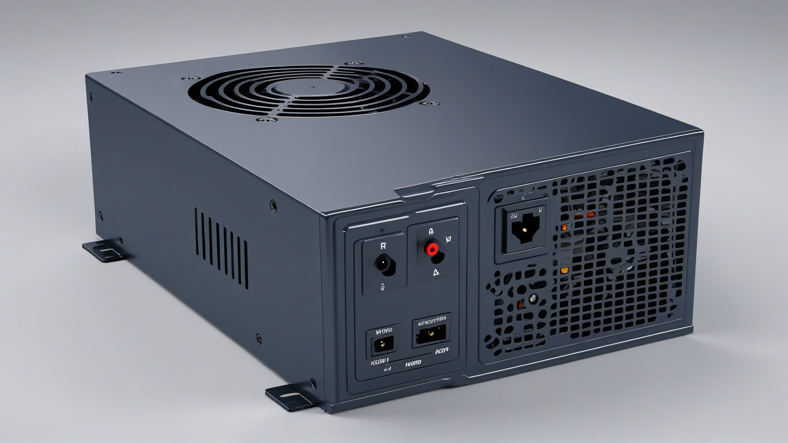

Le Bloc d'Alimentation

Rôle
Le bloc d'alimentation (PSU) est le composant alimentant les autres composants de l'ordinateur.
Types d'Alimentation
Il en existe plusieurs sortes :
- L'AT. Il était utilisé dans d'anciens ordinateurs. L'interrupteur de mise en service était connecté sur le réseau électrique.
-
L'ATX. Il est utilisé aujourd'hui. L'interrupteur de mise en service est connecté à la carte mère.
Il possède plusieurs connectiques correspondant à plusieurs composants, comme:
- Le connecteur 24 broches ou 20 + 4 broches (carte mère)
- Le connecteur PCIe (carte graphique)
- Le connecteur SATA (pour les disques durs)